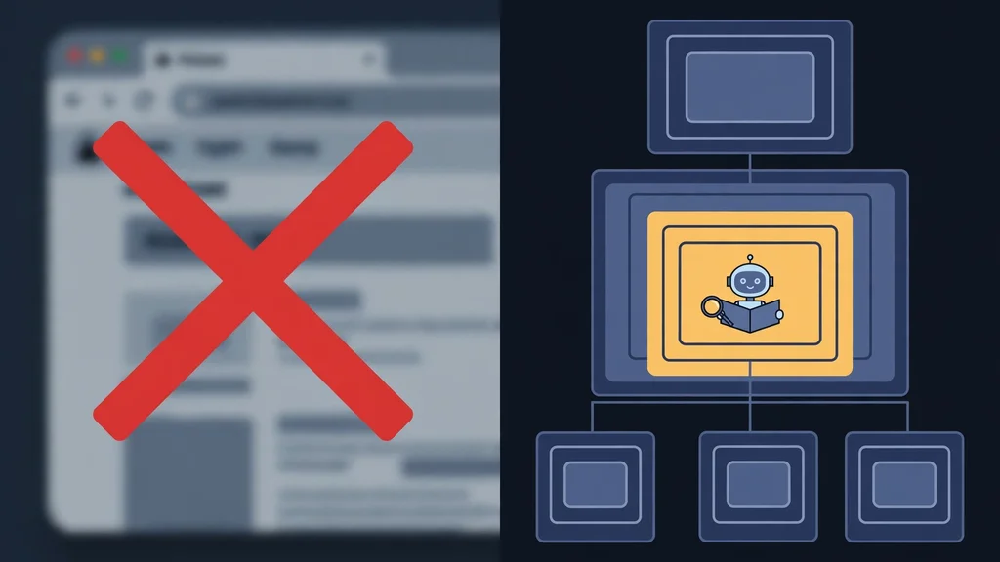
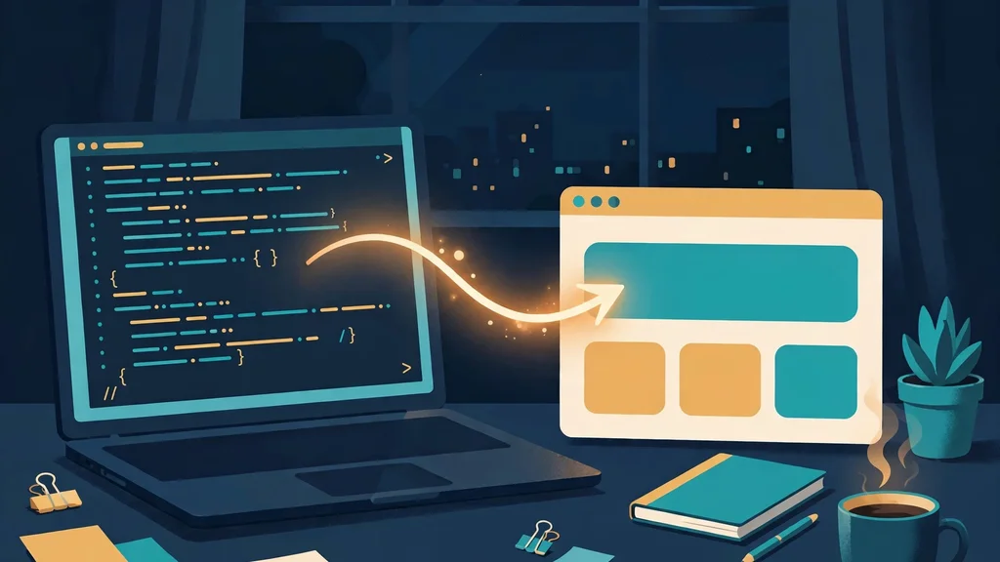

Stop photographing the browser: give your coding agent an accessibility-first browser with axuse
Most browser agents work by taking screenshots and guessing where to click. axuse takes the opposite approach: it reads the browser's accessibility tree through Chrome DevTools Protocol, so your agent clicks a stable element reference instead of a pixel coordinate. The result, in the project's own benchmark, is fewer tool calls, fewer tokens, and faster tasks — and this guide gets you there in seven steps.
doctor to verify the browser, add it to Claude Code or Codex with one command, and your agent opens pages, reads diffs of what changed, and acts on element refs — no screenshot loop, no pixel guessing.- Who: CTOL Digital (ctoldigital/axuse on GitHub).
- What: axuse, an accessibility-first browser and computer-use MCP server for Codex, Claude Code, OpenCode, Antigravity and any MCP-capable host.
- When: the repository was created 14 October 2026 and had 508 GitHub stars at the time of writing.
- Requirements: Node.js 22 or newer and a Chromium-family browser (Chrome, Edge, Chromium or Chrome for Testing); axuse has no npm dependencies.
- Licence: PolyForm Noncommercial License 1.0.0 — noncommercial use; check the licence before any commercial use.
- Project benchmark: median 17 seconds per task versus 26 seconds for Codex with its Chrome extension and 56 seconds for browser-use, with 4.7M tokens versus 9.8M and 8.8M — the project's own numbers, not an independent test.
Open a browser agent's trace and you will usually find the same loop: screenshot, guess a coordinate, click, screenshot again to see whether it worked. Every step costs a megabyte of image tokens and a vision pass, and a misclick only shows up two screenshots later. axuse, from CTOL Digital, argues the loop is the wrong interface entirely. A browser already exposes a structured view of itself — the DOM and the accessibility tree — and Chrome DevTools Protocol (CDP) lets a program read and drive it directly.
That is the whole pitch: one MCP server, no npm dependencies, that plugs into Codex, Claude Code, OpenCode, Antigravity or any MCP-capable host, and hands your agent the browser as data rather than as pictures. Here is how to set it up and run your first task with it.
What you'll need
- A machine with Node.js 22 or newer installed (
node --versionshould print 22 or higher). - A Chromium-family browser: Chrome, Edge, Chromium or Chrome for Testing. On a bare server with no browser, axuse can provision one itself (step 2).
- An agent harness that speaks MCP: Claude Code or Codex are the documented examples; OpenCode and Antigravity work via a printed config block.
- Git, to clone the repository.
Step 1: Check your Node.js version
axuse needs Node 22 or newer and nothing else installed from npm — the repository states it has zero dependencies. Confirm your version first, so a stale Node does not surface later as a cryptic failure:
node --version
# expect v22.x or newerIf you see v20 or older, upgrade Node before continuing; every command below assumes 22+.
Step 2: Clone axuse and run doctor
git clone https://github.com/ctoldigital/axuse.git
cd axuse
node src/cli.js doctor # finds a browser, launches it, takes a snapshotdoctor is the single most useful command in this guide: it finds a browser, launches it and takes a snapshot, so you learn immediately whether the whole lane works. If you are on a bare server with no browser and no sudo, provision a pinned Chrome for Testing under ~/.cache/axuse first:
node src/cli.js install-browserThen run doctor again. Do not skip this check — debugging a harness config with a broken browser underneath it wastes the whole session.

Step 3: Add axuse to your harness
Use your absolute path to src/cli.js — the examples below use /abs/path/axuse as a placeholder, so substitute your real checkout path:
# Claude Code
claude mcp add --scope user axuse -- node /abs/path/axuse/src/cli.js mcp
# Codex
codex mcp add axuse -- node /abs/path/axuse/src/cli.js mcpFor OpenCode, Antigravity or any other MCP host, print the config block and paste it into your host's config instead:
node src/cli.js print-config --harness opencode # or agy | genericRestart or reload your harness so the new MCP server loads, then confirm the ax_ tools are listed before you ask for anything in the browser.
Step 4: Run your first browser task
The README's own starter task is deliberately small — it proves the loop works before you trust it with anything real. Ask your agent, verbatim:
Open https://example.com, find the "More information" link and tell me where it goes.
Watch what happens instead of just reading the answer. The agent calls ax_open, reads the accessibility snapshot, and acts on element refs like [ref=e7]. Each action returns only what changed — a diff — rather than a fresh full-page dump. That diff-first design is the core of the speed claim: the agent never re-reads a page it already knows.
Step 5: Search the page, don't scroll-and-read
Two habits separate a fast axuse session from a slow one, both from the project's own usage contract. First, search instead of scrolling: ax_observe {find:"text"} returns only the matching lines, with context and refs, from the whole page, and ax_scroll {until:"text"} scrolls a lazy list in one call until the text appears and returns just that neighbourhood. Second, act on refs, not pixels: refs are bound to the element's identity and resolved live after its box stabilises, so a click lands even if the layout shifted since the snapshot.
Try it on a long docs page: ask the agent to find one heading, then jump straight to it, and notice how little of the page comes back in the response. If the agent starts describing screenshots or coordinates, it has drifted off the contract — the README is explicit that coordinates are the last resort and screenshots are rationed.
Step 6: Fill a form in one call, not one field at a time
For forms, the contract is batching: one ax_fill with every field — text, selects, checkboxes and radios as true/false, sliders as numbers — plus submit, rather than one call per field. Try it on a form you control, such as a local test page or your own site's contact form, and compare the tool-call count against the field-by-field approach. Cross-origin iframes show up as their own sections (for example, --- frame f1 (url) --- with f1:e3 refs), and a click that opens a new tab reports it and returns the new tab's snapshot, so multi-tab flows stay trackable.
Two failure modes are worth learning by name, because axuse reports them as typed errors instead of silent misclicks: REF_NOT_FOUND (the ref is gone — re-observe) and STALE_STATE (the page moved under you — re-observe and retry). A DIALOG_OPEN result means an alert, confirm or prompt appeared; answer it with ax_dialog rather than clicking around it.

Step 7: Verify, then decide on the daily-browser setup
Run doctor once more with the harness connected. If it passes, the basic lane is done. Two optional branches, depending on your machine:
- Drive your own logged-in Chrome instead of a fresh browser: run the guided bridge setup,
node src/cli.js setup --browser chrome --harness codex, click Load unpacked once when it opens the extensions page, then verify withnode src/cli.js bridge verify. - On a display-less Linux server: server mode boots a private Xvfb display and runs Chrome fully headed on it, rather than headless.
doctorverifies that lane too and prints the measured posture and persona.
Governance caps are worth knowing before a big run: the defaults cap the server at 8 browsers and 48 tabs, and temporary browser profiles are deleted on exit, so a runaway session fails with a typed error instead of eating the machine.
What you built
You now have a coding agent that browses by structure: it opens pages through ax_open, reads diffs instead of full snapshots, searches with ax_observe, fills forms in one ax_fill, and reports typed errors when a ref goes stale. On the project's own benchmark table — same harness, same model, against Codex's Chrome extension and browser-use 0.13 — axuse's median was 17 seconds per task against 26 and 56 seconds, 4.7M tokens against 9.8M and 8.8M, and a median of 5 tool calls against 7 and 12, with accuracy tied. A harder 7-task extension (checkout flow, virtualised grid, date pickers, signup errors, nested iframes, file upload, local dev app) was run once, with axuse passing 7/7. Treat those as the project's numbers, not an independent review — but the mechanism behind them, diffs instead of screenshots, is visible in your own traces from step 4 onward.
Honest limitations
- The benchmark is self-reported. The README's table is the project's own run, and the harder extension has been run once so far. Your mileage will vary with model, site and task.
- Chromium-family browsers only, as documented. The README names Chrome, Edge, Chromium and Chrome for Testing; do not assume another browser engine works.
- Node 22+ is a hard floor, not a suggestion, and desktop control is platform-gated: the Windows driver is verified, while macOS desktop control is an explicit opt-in (
AXUSE_ENABLE_MACOS_CUA=1) that still needs Accessibility and Screen Recording grants. - Noncommercial licence. axuse is published under the PolyForm Noncommercial License 1.0.0. Personal and evaluation use is the natural fit; check the licence before building it into a commercial product.
- This guide stays clear of solver plugins. The core ships no CAPTCHA solvers — solvers are separate, commercially licensed packages — and nothing here uses them. If a site challenges your agent, that is a stop sign, not a prompt to work around it.
- It is still a browser agent. Give it tasks you could check yourself, keep it away from accounts and payments until you trust its traces, and read the diff it returns before believing its summary.
Frequently asked questions
What do I need to run axuse?
Node.js 22 or newer, a Chromium-family browser (Chrome, Edge, Chromium or Chrome for Testing), and an MCP-capable harness such as Claude Code, Codex or OpenCode. axuse itself has no npm dependencies.
How is axuse different from a screenshot browser agent?
A screenshot agent photographs the page and guesses pixel coordinates. axuse reads the browser's accessibility tree over Chrome DevTools Protocol, acts on stable element refs like [ref=e7], and returns only the diff of what changed after each action — which is why the project's benchmark shows fewer tokens and fewer tool calls.
Can I use axuse commercially?
Not under its default terms: axuse is published under the PolyForm Noncommercial License 1.0.0, which covers noncommercial use. Check the licence before any commercial use.